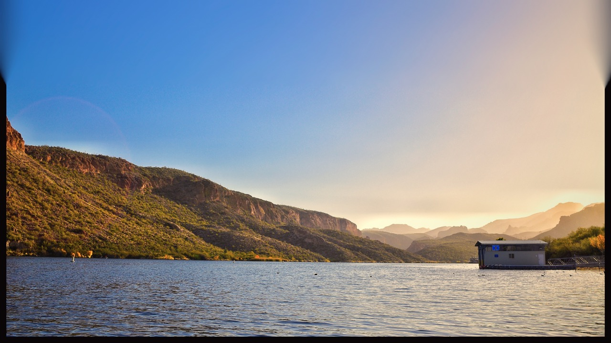

| Hobby | My skill level |
|---|---|
| Sleeping | Expert |
| Watching videos on YouTube (Educational... mostly) | Fairly seasoned |
| Woodworking | Absolutely terrible |
| Hiking and rock-climbing | Surprisingly good |
| Photography (DSLR astro-photography, landscape, portrait, and macro) | Pretty good |
| Programming | TBD :) |